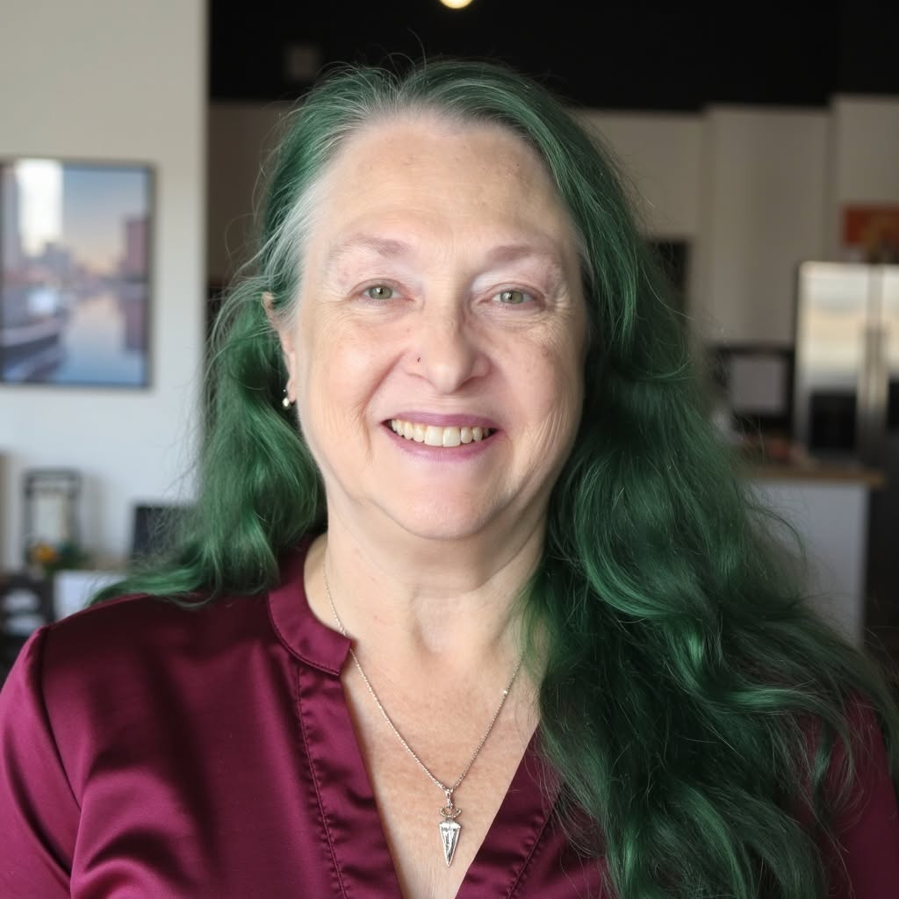
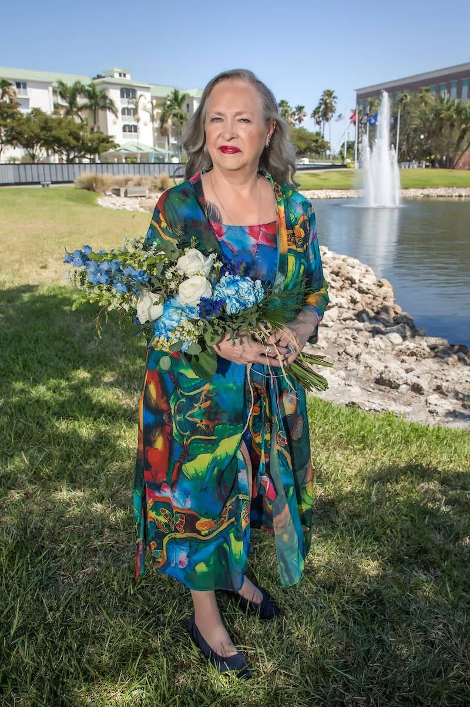

Whole-body healing for women who are ready for all of it.


"The body doesn't end where science stops measuring."
For thirty years, Donna Oland worked as a Registered Nurse — watching, listening, and learning the intricate language of the human body. She understood anatomy the way few do: not just from textbooks, but from thousands of hours at the bedside, where she witnessed the limits of clinical medicine and the power of something more.
That something more led her to Usui Reiki — earning her Level I, II, and Master certifications — and then to Crystal Reiki through the Centre of Excellence. Today, Donna weaves together modalities that span the physical, mental, metaphysical, and environmental: aromatherapy, sound healing, chakra work across all nine energy centers, and an attunement to the Schumann Resonance — Earth's own electromagnetic heartbeat.
She is, in her own words, a witch. Not in the Hollywood sense — but in the oldest, most reverent meaning: a woman who holds knowledge, honors nature, and heals with intention. Her clients are women who have tried everything else and are finally ready to try the truth.
True healing isn't a single modality — it's a conversation between every layer of who you are. Donna's approach addresses the body you can see, the energy you can feel, and the environment that shapes both.
Physical. Mental. Emotional. Metaphysical. Environmental. Donna works across all five — because an imbalance in one always speaks into the others.
The Earth's own electromagnetic pulse — the frequency of life itself. Donna incorporates attunement to this fundamental resonance, helping the body remember its most natural state of balance. Science calls it a geomagnetic phenomenon. Healers call it coming home.
Where most practitioners work the primary seven, Donna works all nine — including the Soul Star and Earth Star chakras that extend above and below the physical body, anchoring you between cosmos and earth.
Each stone carries its own frequency. Donna sources and works with crystals as amplifiers — placed on the body, held in intention, and used to direct energy with precision born from years of both scientific and sacred training.
"I've never felt anything like it. It was like thirty years of weight just left my body in one hour. Donna has this way of knowing exactly where you're holding everything — the nurse in her sees the body, but the healer in her sees so much more. I came in skeptical and left in tears — the good kind."
"The crystal work was unlike anything I've experienced at an expo or in a class. Donna places each stone with such intention — you can actually feel the shift happening in real time. She explained everything in a way that made sense both scientifically and spiritually. I've been back four times."
"I was drawn to her at the expo because she carried herself differently — like someone who has actually lived what she teaches. The Schumann Resonance work opened something in me I didn't even know needed opening. My sleep has completely changed. My anxiety has changed. Donna doesn't just heal the symptom."
Whether you find Donna at a metaphysical expo or reach out directly — every session begins the same way: with her full attention, thirty years of clinical knowledge, and a sacred commitment to your wholeness.